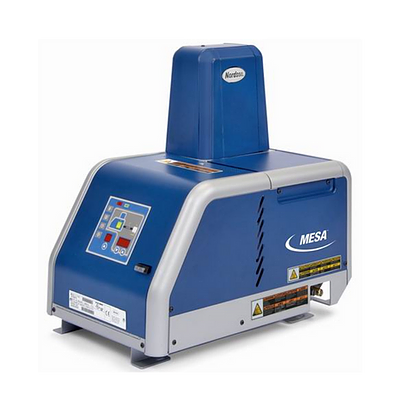

Principio de Funcionamento
Os aparelhos de fusão de adesivo Mesa são usados em conjunto com as mangueiras e pistolas de hotmelt para criar um sistema de aplicação desejável.. O aparelho de fusão liquifica o hotmelt na forma sólida e mantém o hotmelt à temperatura desejada. Quando as pistolas são activadas, o aparelho de fusão bombeia o adesivo liquefeito através das mangueiras para fora dos bicos da pistola, onde é normalmente aplicado à superfície de um produto.Uma particularidade fica no fato de usar uma bomba pneumática em sua aplicação.
Dados Técnicos
- Tipo de bomba: pistão pneumática 14:1
- Pressão máx: 90 psi
- Temperatura de controle: 40 to 230 °C
- Nivel de ruído máx: 64db
Capacidade
- Tanque: 4,6,9,14Kg
- Canais disponíveis: 4
Principais Falhas e Soluções
| F1 | F2 | F3 | F4/A | |
|---|---|---|---|---|
| Definição da falha | Circuito aberto | Baixa temperatura | Sobretemperatura | Falha Termostato |
| Solução | Verificar por fusíveis abertos e/ou queima da resistençia de aquecimento | Verificar por mau contato ou folga do sensor e/ou resistençia | Verificar por mau contato ou folga do sensor e/ou resistençia | Substituir o termostato, cabo J7 ou a placa principal |